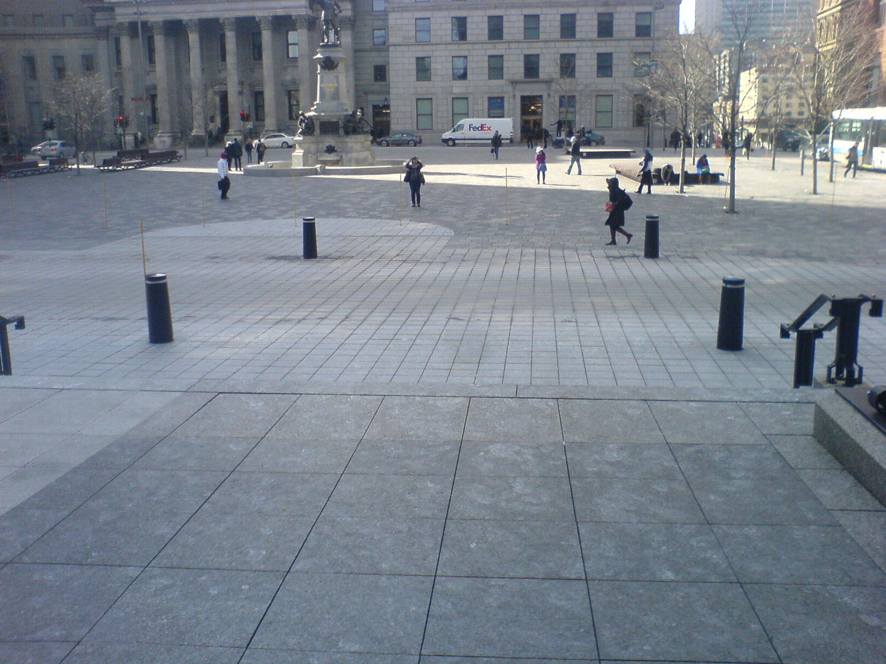
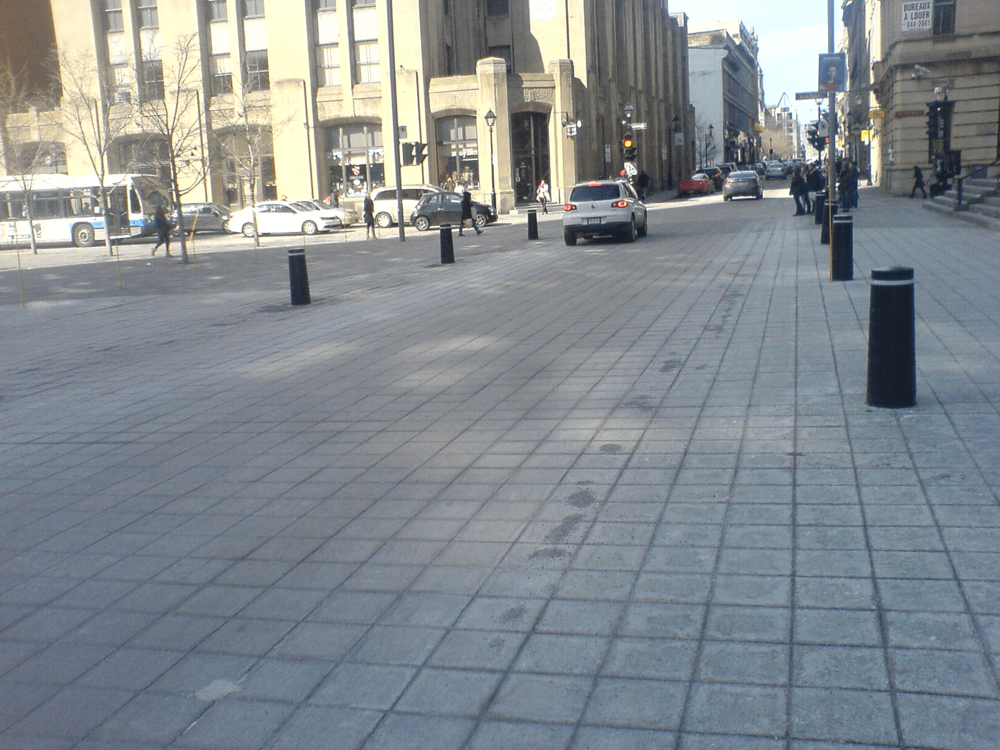

 The pedestrian's perspective. Image credit: RC.
 The driver's perspective. Image credit: RC.
A prayer or a tourist exiting from the main doors of Montréal’s Notre Dame cathedral is visually invited to walk down a flight of steps into the piazza. A perspective of posts shows the way to the walker. Only problem, the crossing of Rue St. Jacques, just at the foot of the stairs, with just a faint marking of a difference in function – no fence, no sidewalk, only a change in pavement texture.
Rue St. Jacques is open to car circulation. A perspective of posts shows the way to the driver. At this time you will not be surprised to discover that the very same posts that create the affordances for the driver are those that determine the affordances for the walker. Using a square grid for the post inevitably creates orthogonal lines. Geometry makes the alignments of posts talk at cross purposes.
We would like to introduce the notion of collateral affordance. Posts were meant for drivers – for keeping them on the road, for signaling to them that they ought not to enter the piazza. This is their main affordance. But locating them on a square grid creates a collateral affordance for pedestrians – in this particular context.
Affordances proved an important explanatory tool for psychology, and their theoretical power propagates into the study of design. But we need to modulate the notion – to explore it in more detail. No matter what you do, you are bound to afford something. Whichever modification you make to the mesoscopic environment, there will be consequences.(James J. Gibson, Ecological Approach to Visual Perception)